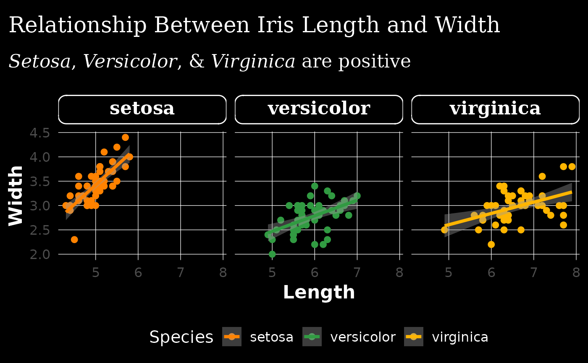

Custom ggplot2 dark theme compliant with ASN's brand identity.
Source: R/asn_ggplot2_themes.R
theme_asn_dark.RdCustom ggplot2 dark theme compliant with ASN's brand identity.
Value
A dark-mode version of ASN brand identity-compliant ggplot2 theme, built off of theme_minimal().
Examples
library(ggplot2)
ggplot(
iris,
aes(
x = Sepal.Length,
y = Sepal.Width,
color = Species
)
) +
geom_point() +
geom_smooth(
method = "lm"
) +
labs(
x = "Length",
y = "Width",
title = "Relationship Between Iris Length and Width",
subtitle = "<i>Setosa</i>, <i>Versicolor</i>, & <i>Virginica</i> are positive"
) +
facet_wrap(~ Species) +
theme_asn_dark(
title_font = "serif",
base_font = "sans"
) +
scale_color_asn(palette = "dark_mode")
#> `geom_smooth()` using formula = 'y ~ x'
